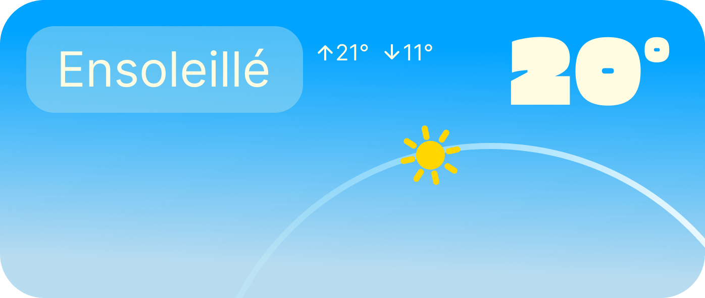
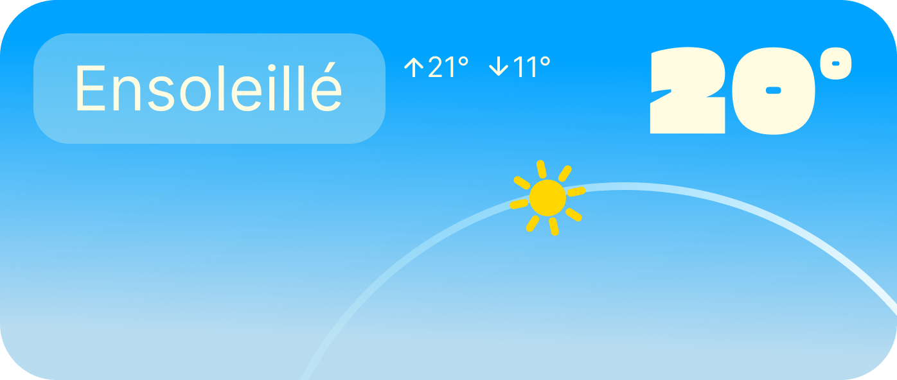

"Découvrez la vie en mouvement du parc du Plan de la Garde et suivez l'évolution de sa faune et de sa flore au rythme de la nature."
Après plusieurs observations au parc naturel du Plan de la Garde, Margaux et moi avons remarqué que les emplacements des points d'observation intéressants n'étaient pas suffisamment mis en valeur pour les visiteurs. C'est pourquoi nous avons pris l'initiative de créer une application mobile pour résoudre ce problème. Le principe de base de l'application repose sur un système de carte où les utilisateurs peuvent voir des points d'intérêt : plantes, sources d'eau, faune et flore.
Les utilisateurs peuvent visiter les points d'intérêt mis en évidence par le parc, mais ils peuvent également placer leurs propres emplacements. Ensuite, une banque d'images publique est créée pour chaque point, permettant aux utilisateurs de suivre l'évolution de la nature.


Les différentes nuances de vert évoquent directement la nature, symbolisant la fraîcheur et la vitalité. Elles créent une atmosphère apaisante qui encourage l'exploration et la connexion avec l'environnement. Nous avons ajouté une teinte beige pour apporter de la chaleur et de l'accueil, équilibrant ainsi le vert dominant. Cela crée un espace visuellement agréable et invitant pour l'utilisateur.
Enfin, l'orange a été intégré pour introduire une touche dynamique. Cette couleur vive capte l'attention et ajoute une énergie sportive, encourageant l'exploration et les activités en extérieur. Ensemble, ces couleurs établissent une expérience visuelle harmonieuse et engageante, parfaitement adaptée à notre thème.
A B C D E F G H I J K L M N O P Q R S T U V W X Y Z
a b c d e f g h i j k l m n o p q r s t u v w x y z
0 1 2 3 4 5 6 7 8 9
Erica One Regular 400
A B C D E F G H I J K L M N O P Q R S T U V W X Y Z
a b c d e f g h i j k l m n o p q r s t u v w x y z
0 1 2 3 4 5 6 7 8 9
Trial Black 900
A B C D E F G H I J K L M N O P Q R S T U V W X Y Z
a b c d e f g h i j k l m n o p q r s t u v w x y z
0 1 2 3 4 5 6 7 8 9
Trial Regular 400
Le logo combine une icône de localisation et un héron pour symboliser l'équilibre entre la technologie et la nature. L'icône représente la fonction de suivi, tandis que le héron reflète la faune du parc et l'atmosphère paisible. Cette fusion met en avant l'idée de guider les utilisateurs tout en restant connectés à l'environnement naturel.


Nous devions créer des marqueurs clairs qui inspirent le mouvement. C'est pourquoi nous avons choisi de nous inspirer de la silhouette d'une goutte d'eau.


En réfléchissant au moyen approprié pour impliquer tous les publics dans le processus de création, le choix de créer une application mobile est devenu évident. Nous avons donc décidé de développer une application en utilisant le logiciel Figma.
Pour la création de Mouvaplan, j'ai choisi Figma car c'était le moyen le plus simple et le plus rapide de donner vie à mes designs. L'outil m'a permis de prototyper facilement mes idées et d'avoir une vision claire de l'interface. De plus, sa flexibilité et sa facilité d'utilisation m'ont permis de me concentrer sur la créativité plutôt que sur les aspects techniques.


 

J'ai intégré un système météorologique en temps réel dans l'application pour améliorer l'expérience des visiteurs. Cette fonctionnalité ne se contente pas d'informer ; elle guide les choix d'activités et les suggestions d'itinéraires, permettant à chaque utilisateur de profiter du parc dans des conditions idéales. C'est une façon de rendre l'application véritablement utile et personnalisée, allant au-delà d'un simple guide.
Que cette création éveille votre inspiration. (• ◡•)